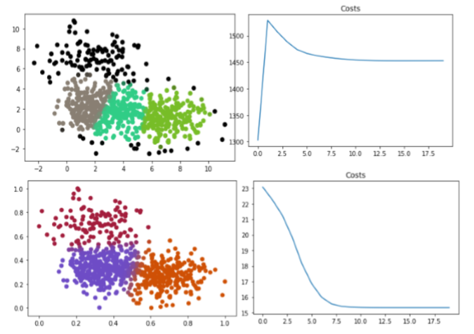

Contact information：
email：o8z6e6@u.northwestern.edu
Tel：+1 8722355213
github.com/sesameintro
Project
Abstract
An improved K-means methods is applied to cluster the related words in books' title. In this project the substantial technique improvement would be introduced and several experiment will show the new algorithms' power. In the end, I combine the traditional Natural language Processing methods and the new algorithm to build a better tool on words classification.
Motivation
Unstructured data in the form of text is everywhere: emails, chats, web pages, social media, support tickets, survey responses, and more. Text can be an extremely rich source of information, but extracting insights from it can be hard and time-consuming due to its unstructured nature. Businesses are turning to text classification for structuring text in a fast and cost-efficient way to enhance decision-making and automate processes. Sometimes, we classify the words and text using supervised learning to label the words, but labeling is pretty expensive and time-consuming. Therefore, clustering technique is introduced to do the work after feature extraction. However, traditionally, if we use original K-means clustering to classify the word, we cannot get the accurate and precise results because the original k-means cannot deal with problems like the elliptical problem, which means we need to improved the clustering methods in the final words classification stage.
Result
copyright